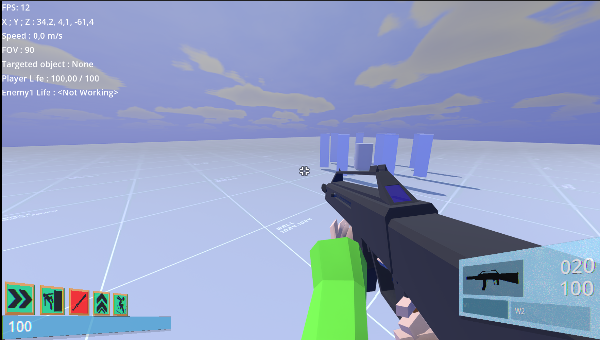
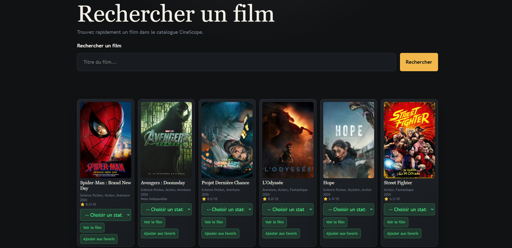
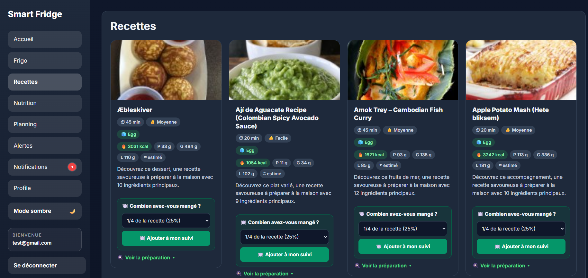

Jeu en Go
RPG au tour par tour développé en Go avec gestion de personnages, inventaire et combats.
Technologies : Go
Lien du git du projet : https://gitlab.com/education5890737/projet-red_fantasy_rpg

RPG au tour par tour développé en Go avec gestion de personnages, inventaire et combats.
Technologies : Go
Lien du git du projet : https://gitlab.com/education5890737/projet-red_fantasy_rpg
Implémentation web du jeu de Puissance 4.
Technologies : Go, HTML, CSS
Lien du git du projet : https://gitlab.com/education5890737/power4-web

Projet de création d'un jeu FPS en C# en compganie d'étudiants en 3D et Audiovisuel
Technologies : C#
Lien du git du projet : https://gitlab.matthias-hervouet.fr/game/afterlight

Application web pour gérer une bibliothèque de films.
Technologies : JavaScript, HTML, CSS, React, TypeScript
Lien du git du projet : https://github.com/theoluthin2903/Theo_LUTHIN_Projet_React_TypeScript

Application web FastAPI pour gérer un frigo intelligent et réaliser un suivi nutritionnel.
Technologies : Python
Lien du git du projet : https://github.com/theoluthin2903/Theo_L_Maxime_Projet_Smart_Fridge
